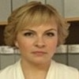
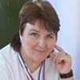

Дошкольное отделение школы № 883
В 2015 году 63% первоклассников Школы № 883 пришли из дошкольного отделения.
- улица Вилиса Лациса, 19к3
- улица Героев Панфиловцев, 14к3
- улица Вилиса Лациса, 7к2
Воспитатели
Воспитатели, которых чаще всего благодарят родители (отзывы и профили сотрудников взяты с официального сайта школы):|
Воспитатель
Антипова Ангелина Вячеславовна
8 благодарностей |
Воспитатель
Горохова Анжела Владимировна
6 благодарностей |
 Воспитатель
Марцева Елена Николаевна
Воспитатель
Марцева Елена Николаевна
5 благодарностей |
 Воспитатель
Волошина Татьяна Владимировна
Воспитатель
Волошина Татьяна Владимировна
4 благодарности |
|
Воспитатель
Назарова Наталья Арсеньевна
4 благодарности |
Воспитатель
Хлистун Мария Ильгизовна
4 благодарности |
Воспитатель
Балахнина Елена Сергеевна
4 благодарности |
Воспитатель
Мустафаева Эльвира Эскандеровна
3 благодарности |
|
Бауман Елена Анатольевна
3 благодарности |
Воспитатель
Алимпиева Татьяна Леонидовна
2 благодарности |
Воспитатель
Веденеева Татьяна Борисовна
2 благодарности |

Логопед
Улитина Елена Петровна
1 благодарность |
|
Воспитатель
Кокарева Марина Викторовна
1 благодарность |
Воспитатель
Солдатова Ирина Ильгизовна
1 благодарность |
Воспитатель
Савкина Елена Алексеевна
1 благодарность |

Физ. рук.
Плотникова Ирина Михайловна
1 благодарность |
Отзывы
Данные собраны c официального сайта школы и через форму для отзывов.
От всей души выражаю благодарность воспитателям группы №34 Елене Николаевне и Марии Ильгизовне (ДОУ учебного корпуса "Керчь").
За прошедший учебный год наши любимые воспитатели сделали огромный вклад в развитие наших детей. Мы ходим в этот сад с двух лет и нам есть с чем сравнивать. С детьми лепили, рисовали, клеили, учили стихи. А чего стоит поездка в музей космонавтики!!! Дети в восторге! Мой ребенок, спустя два месяца все еще вспоминает поездку, да что поездка, он вспоминает новогодний праздник и «Дуньку колдуньку», и праздник для мам. Сын каждый день с гордостью делится знаниями, полученными в саду: «Мама, а ты знаешь!? ...».
А в дни, когда у нас выходной, утро обязательно начинается с зарядки: «чик-чик-чик, руки не сгибаем, чик-чик-чик, точно выполняем», которую нас научили делать в детском саду.
За прошедший учебный год наши воспитатели проявили себя как опытные, доброжелательные, справедливые люди, которые ответственно подходят к своей работе, а главное с любовью и нежностью. Это педагоги с большой буквы! Мы ими дорожим и ценим все то, что они делают для наших детей. Спасибо вам за любовь и индивидуальный подход к каждому ребенку.
Побольше бы таких специалистов!
За прошедший учебный год наши любимые воспитатели сделали огромный вклад в развитие наших детей. Мы ходим в этот сад с двух лет и нам есть с чем сравнивать. С детьми лепили, рисовали, клеили, учили стихи. А чего стоит поездка в музей космонавтики!!! Дети в восторге! Мой ребенок, спустя два месяца все еще вспоминает поездку, да что поездка, он вспоминает новогодний праздник и «Дуньку колдуньку», и праздник для мам. Сын каждый день с гордостью делится знаниями, полученными в саду: «Мама, а ты знаешь!? ...».
А в дни, когда у нас выходной, утро обязательно начинается с зарядки: «чик-чик-чик, руки не сгибаем, чик-чик-чик, точно выполняем», которую нас научили делать в детском саду.
За прошедший учебный год наши воспитатели проявили себя как опытные, доброжелательные, справедливые люди, которые ответственно подходят к своей работе, а главное с любовью и нежностью. Это педагоги с большой буквы! Мы ими дорожим и ценим все то, что они делают для наших детей. Спасибо вам за любовь и индивидуальный подход к каждому ребенку.
Побольше бы таких специалистов!
Хочется выразить благодарность воспитателям 10 группы ГБОУ СОШ 833 Волошиной Татьяне Владимировне (которая была с нами с самого начала ,но к сожалению с перерывами,стала нам родная),Ольге Александровне,и помощника воспитателей!спасибо за огромное терпение, тепло,заботу о наших детках! Сын (Б. Кирилл )всегда шел в садик с удовольствием, были моменты когда уходить не хотел! Воспитатели всегда внимательные ко всем вопросам, проблемам ! Хочется сказать огромное спасибо всем кто был у нас,за их тепло,заботу,за помощь в воспитание ,за их работу!
Здравствуйте.Хочу выразить искреннюю благодарность воспитателям группы №7 ДОУ учебного корпуса "ВОЛГОГРАД" Мустафаевой Эльвире Эскандеровне и Гороховой Анжеле Владимировне,а так же помощнику воспитателя Самусевой Елене Васильевне,за их высокий профессионализм,чуткое отношение к детям,заботу,внимание,доброту,индивидуальный подход к каждому ребенку.Детский сад для малышей как второй дом.Каждый день в нашей группе царит по-настоящему теплая домашняя обстановка.Нас всегда встречают с улыбкой и хорошим настроением,и мы,родители,с удовольствием передаем своих деток в надежные,умелые руки.Детей приучают к аккуратности,помогают правильно одеваться и приводить вещи в надлежащий вид.Формируют санитарно-гигиенические навыки,что положительно сказывается на здоровье детей.Наши воспитатели постоянно проводят с детьми интересные и увлекательные занятия.Учат мастерить различные поделки,творить и фантазировать.Малыши учатся дружить и уважать друг друга.Хочется отметить объем и разнообразие творческий занятий в нашей группе.С нашими детками играют в различные развивающие игры,прививают любовь к книгам,читая им сказки,учат стихи,проводят интересные занятия по развитию мелкой моторики,лепят,рисуют,создают аппликации.В раздевалке группы постоянно вывешиваются работы наших деток,выставляются детские поделки.Наши воспитатели проводят замечательные утренники несмотря на возраст малышей,Анжеле Владимировне и Эльвире Эскандеровне удалось создать и подарить замечательные праздники нам и нашим деткам.Они дали возможность каждому малышу раскрыться и показать свой талант,участвуя в танце,сценке или рассказывая стихи.Нельзя не отметить их работу с родителями,всегда объяснят,дадут совет,наши просьбы и замечания никогда не остаются без внимания.Благодаря воспитателям,моя дочь стала более самостоятельной и в ней открылись новые творческие способности.Мы так же очень благодарны Елене Васильевне,всегда спокойна и заботлива,готова выслушать и помочь.Благодаря ей у нас в группе идеальная чистота и порядок,комфорт и уют.Детки сыты и опрятны. Спасибо Анжела Владимировна,Эльвира Эскандеровна и Елена Васильевна за ваш нелегкий труд,любовь и радость,подаренную нашим детям.Нам очень повезло с вами.
Хотим выразить благодарность воспитателям учебного корпуса "Смоленск" Кокаревой Марине Викторовне и Веденеевой Татьяне Борисовне за плодотворную работу, за комфортную и теплую обстановку, которую Вы создаете в нашей группе.Вы вкладываете в воспитание много своих сил, окружаете наших детей заботой и лаской. Спасибо Вам за то, что учите наших детей быть честными, добрыми, отзывчивыми. В группе царит доброжелательная атмосфера, каждый ребенок находится во внимании воспитателя. Вы устраиваете различные праздники, на которые мы, родители, с радостью приходим и наблюдаем приготовленное представление. Выражаем Вам свою признательность. Нам очень повезло с вами. Огромное спасибо!
Здравствуйте!
Хочу выразить благодарность, воспитателю 4 группы учебного корпуса «Волгоград», Антиповой Ангелине Вячеславовне и нянечке Елене Юрьевне!
Наша самая главная ценность - дети! И к ним нужен особенный подход. Антипова Ангелина Вячеславовна творческий педагог, любящий свою профессию. Внимательно, с уважением она относится к своим подопечным, поэтому старается изучить способности детей, чтобы удовлетворить их запросы. Воспитательница проводит много интересных игр, учит стихи и песни с малышами. Дети всегда довольны, опрятны (в частности, моя дочь, всегда аккуратно заплетена). Ангелина Вячеславовна, всегда встречает малышей при входе в группу, что для них не мало важно и всегда приятно. Моя дочка, адаптировалась благодаря нашей воспитательнице буквально за 3 дня, не посещая до этого группу кратковременного пребывания.
Елена Юрьевна - добрый, отзывчивый человек. Благодаря умению контактировать с детьми она пользуется расположением родителей! Бесконечно милая, ласковая, очень ответственно подходит к свое работе, с любовью и нежностью! Дети её очень любят!
Спасибо, за то, что вы есть!
Хочу выразить благодарность, воспитателю 4 группы учебного корпуса «Волгоград», Антиповой Ангелине Вячеславовне и нянечке Елене Юрьевне!
Наша самая главная ценность - дети! И к ним нужен особенный подход. Антипова Ангелина Вячеславовна творческий педагог, любящий свою профессию. Внимательно, с уважением она относится к своим подопечным, поэтому старается изучить способности детей, чтобы удовлетворить их запросы. Воспитательница проводит много интересных игр, учит стихи и песни с малышами. Дети всегда довольны, опрятны (в частности, моя дочь, всегда аккуратно заплетена). Ангелина Вячеславовна, всегда встречает малышей при входе в группу, что для них не мало важно и всегда приятно. Моя дочка, адаптировалась благодаря нашей воспитательнице буквально за 3 дня, не посещая до этого группу кратковременного пребывания.
Елена Юрьевна - добрый, отзывчивый человек. Благодаря умению контактировать с детьми она пользуется расположением родителей! Бесконечно милая, ласковая, очень ответственно подходит к свое работе, с любовью и нежностью! Дети её очень любят!
Спасибо, за то, что вы есть!
Хочу выразить свою огромную благодарность и восхищение всем педагогам детского садика корпуса Смоленск (Вилиса Лациса 19, к.3).
Ребенок ходит в садик только с сентября прошлого года, и все говорили, что требуется много времени, чтобы привыкнуть к новым условиям. Но, к огромному счастью, ребенку безумно там понравилось. Наши педагоги 23 группы (Балахнина Елена Сергеевна и Алимпиева Татьяна Леонидовна и помощник Надежда Ивановна) настоящие волшебники! Ребенок ими бредит, делает для них поделки. Ко всем они смогли найти подход, и к детям и к родителям (что тоже важно). В группе регулярно проходят занятия по лепке, аппликации, рисованию, учат с детьми стихи и читают им книжки. Кроме этого, в садике есть выбор дополнительных кружков. Мы выбрали творческую студию «Путешествие в прекрасное », которую ведет Бауман Елена Анатольевна и ритмику «Карамельки» (Емельянова Анастасия Александровна). В двух словах… После танцев наша семья вечером должна повторять все движения, которые репетировали на ритмике. А после рисования и лепки наш холодильник пополняется очередным произведением искусства (смотрите фото). 15.03.16 в нашем садике прошел мастер-класс для родителей на тему инновационных техник рисования, я получила огромное удовольствие… даже не знаю как описать. Человек, который в принципе не умеет рисовать, за час создал 3 шедевра, которые не стыдно показать людям, да еще рисовали мы с помощью ватных дисков, чая и карточек… Я в полном восторге от нашего садика и всех педагогов! Если вы решаете в какой садик отдать малыша, то мой отзыв, возможно, поможет кому-то. Всем удачи!
Вложенный файл
Ребенок ходит в садик только с сентября прошлого года, и все говорили, что требуется много времени, чтобы привыкнуть к новым условиям. Но, к огромному счастью, ребенку безумно там понравилось. Наши педагоги 23 группы (Балахнина Елена Сергеевна и Алимпиева Татьяна Леонидовна и помощник Надежда Ивановна) настоящие волшебники! Ребенок ими бредит, делает для них поделки. Ко всем они смогли найти подход, и к детям и к родителям (что тоже важно). В группе регулярно проходят занятия по лепке, аппликации, рисованию, учат с детьми стихи и читают им книжки. Кроме этого, в садике есть выбор дополнительных кружков. Мы выбрали творческую студию «Путешествие в прекрасное », которую ведет Бауман Елена Анатольевна и ритмику «Карамельки» (Емельянова Анастасия Александровна). В двух словах… После танцев наша семья вечером должна повторять все движения, которые репетировали на ритмике. А после рисования и лепки наш холодильник пополняется очередным произведением искусства (смотрите фото). 15.03.16 в нашем садике прошел мастер-класс для родителей на тему инновационных техник рисования, я получила огромное удовольствие… даже не знаю как описать. Человек, который в принципе не умеет рисовать, за час создал 3 шедевра, которые не стыдно показать людям, да еще рисовали мы с помощью ватных дисков, чая и карточек… Я в полном восторге от нашего садика и всех педагогов! Если вы решаете в какой садик отдать малыша, то мой отзыв, возможно, поможет кому-то. Всем удачи!
Вложенный файл
Огромная благодарность за заботу о наших детках прекрасным воспитателям группы 32 "Ландыши" (корпус 5, Героев Панфиловцев, 14, корп.3) Солдатовой Ирине Ильгизовне и Савкиной Елене Алексеевне :) и всему коллективу дошкольного учреждения. Лучший детский садик!
Хочу выразить огромную благодарность всему коллективу Дошкольного отделения (корпус 4) ГБОУ "Школа 883". Особенно хочу отметить всех педагогов, которые работают в группе 23 "Ромашка". Спасибо психологу Андрусенко Наталье Олеговне за квалифицированную помощь, Соловьёвой Надежде Александровне за замечательные, душевные музыкальные праздники. Искреннюю благодарность выражаю воспитателю по физкультуре Плотниковой Ирине Михайловне. Вы научили наших детей играть в шашки, познакомили со многими видами спорта, привили любовь и уважение к физической культуре. После многочисленных районных и окружных соревнований Вы помогли нашим детям почувствовать себя настоящими спортсменами, научили гордиться победами!
Улитина Елена Петровна, спасибо большое Вам за высокий профессионализм, за терпение и нелегкий труд! Наши дети с удовольствием посещали логопедические занятия, а дома делились позитивными впечатлениями, новой информацией и радовали успехами в освоении основ грамоты.
Дорогие наши, любимые воспитатели Марцева Елена Николаевна, Балахнина Елена Сергеевна и Сергиенко Алла Николаевна, огромное спасибо Вам за добросовестный труд, за внимание к нашим детям, за терпение!!! Наши воспитатели обладают высокими профессиональными качествами, глубоким знанием детской психологии, большим опытом работы в педагогической сфере. Вы смогли найти индивидуальный подход к каждому ребёнку, поделились с каждым своим теплом и безграничной любовью. С Вами дети выполняли свои первые проекты, готовили замечательные праздники, ходили на познавательные экскурсии. Вам удалось сформировать у воспитанников неисчерпаемый познавательный интерес, Вы так много сделали для формирования чувства патриотизма у детей!!!
Низкий Вам поклон за заботу о наших детях!
Улитина Елена Петровна, спасибо большое Вам за высокий профессионализм, за терпение и нелегкий труд! Наши дети с удовольствием посещали логопедические занятия, а дома делились позитивными впечатлениями, новой информацией и радовали успехами в освоении основ грамоты.
Дорогие наши, любимые воспитатели Марцева Елена Николаевна, Балахнина Елена Сергеевна и Сергиенко Алла Николаевна, огромное спасибо Вам за добросовестный труд, за внимание к нашим детям, за терпение!!! Наши воспитатели обладают высокими профессиональными качествами, глубоким знанием детской психологии, большим опытом работы в педагогической сфере. Вы смогли найти индивидуальный подход к каждому ребёнку, поделились с каждым своим теплом и безграничной любовью. С Вами дети выполняли свои первые проекты, готовили замечательные праздники, ходили на познавательные экскурсии. Вам удалось сформировать у воспитанников неисчерпаемый познавательный интерес, Вы так много сделали для формирования чувства патриотизма у детей!!!
Низкий Вам поклон за заботу о наших детях!
Здравствуйте! Хочу выразить огромную благодарность коллективу детского сада ГБОУ СОШ школа 883 корп.5, ДОУ-5 , а именно организаторам конкурса "Светлячок"воспитателю Наталье Арсеньевне и старшему воспитателю Юлии Владимировне за подготовку и проведение конкурса .Выражаю глубокую признательность и благодарность за Ваше профессиональное мастерство, педагогический талант, тёплое отношение к детям.15 апреля дети нашего детского сада ГБОУ СОШ № 2097 команда "Солнышко"
были приглашены на участие в конкурсе. С улыбкой на лице нас встретила Юлия Владимировна.
Гостеприимная Наталья Арсеньевна нас провела в зал.Песни, танцы, игры. Начался конкурс на мышление и логику.
Все дети ушли с подарками. все были награждены. Все ушли с огромной радостью. Дети были в восторге.Придя в свой детский сад, они долго рассказывали как их встретили, в каких конкурсах они участвовали. Юлия Владимировна , Наталья Арсеньевна и все , кто принимал активное участие в конкурсе большое спасибо за полученное удовольствие.Успехов Вам и творческих побед!
были приглашены на участие в конкурсе. С улыбкой на лице нас встретила Юлия Владимировна.
Гостеприимная Наталья Арсеньевна нас провела в зал.Песни, танцы, игры. Начался конкурс на мышление и логику.
Все дети ушли с подарками. все были награждены. Все ушли с огромной радостью. Дети были в восторге.Придя в свой детский сад, они долго рассказывали как их встретили, в каких конкурсах они участвовали. Юлия Владимировна , Наталья Арсеньевна и все , кто принимал активное участие в конкурсе большое спасибо за полученное удовольствие.Успехов Вам и творческих побед!
Если вы нашли ошибку или неточность, пожалуйста, сообщите нам об этом.
Ученик, выпускник или родитель? Оставьте отзыв о детском саде.